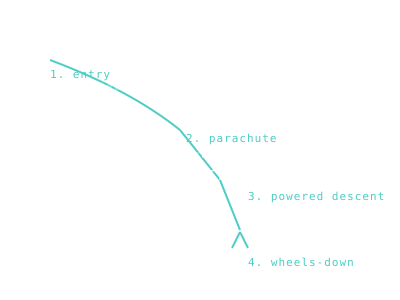

So you want to fly a rocket to Mars.
Welcome. This is the part of Orrery where the buttons stop being magic. Every label in the HUD, every coloured contour in the porkchop, every burn marker on the trajectory — this section explains where it comes from. Read it like a comic book: the diagrams do most of the work, and every italicised term is a link you can chase as deep as you want.
We're going to build a rocket together. Not a literal one — Orrery is a simulator — but the same chain of decisions a real flight team makes, in the order they'd make them. By the end you'll know why launch windows happen every 26 months for Mars and every month for the Moon, why a free-return trajectory exists, and why thrust is the cheapest part of a mission and fuel is the entire fight.
1 — Gravity is the only physics that matters.

Forget rockets for a second. Stand on the Earth, throw a baseball as hard as you can. It comes back down. Throw it harder, it lands farther. Throw it so hard that the ground curves away faster than the ball falls, and the ball misses the planet — forever. That's an orbit. Every spacecraft, every planet, every rock in the asteroid belt is doing this trick around something heavier.
An orbit is an ellipse. It has a size, a shape (round vs. stretched), a tilt, and a phase telling you where on the ellipse the spacecraft is right now (true anomaly). Five numbers and you can predict the position of any object in the solar system, forever, without any other data. That's Kepler's three laws, written down in 1609 — they still work.
The single most useful equation you'll meet here is vis-viva. Plug in your radius, your orbit's size, and out comes your speed. That's it. Earth at perihelion: 30.3 km/s. Earth at aphelion: 29.3 km/s. Same orbit, same energy, different speed.
2 — The rocket equation is the boss fight.

Now: how do you change orbits? You burn fuel. ∆v ("delta-v") is the universal currency of spaceflight — the total velocity change a mission needs. Every move you make on a trajectory has a price tag in km/s.
And that price is brutal. The Tsiolkovsky rocket equation says ∆v scales with the logarithm of how much of your rocket is fuel. Want twice the ∆v? You don't carry twice the fuel — you carry exponentially more. This is why a Saturn V was 90% propellant. Most of the rocket is the fuel that lifts the fuel that lifts the fuel that lifts the spacecraft.
Two numbers fight this gravity tax. Thrust tells you how hard the engine pushes — that's the number nobody really cares about after launch. Specific impulse tells you how efficiently the engine pushes — and that's the one that matters. A chemical rocket gets ~450 seconds. An ion thruster gets 4,000+ — sips fuel for months and outperforms anything chemical for deep-space cruises.
Best magic trick of all: the Oberth effect. Burning your engine when you're already moving fast (low and close to a planet) gives you way more bang for the same fuel. This is why every interplanetary mission does its big departure burn at perigee, hugging the Earth, going as fast as physics allows. Free energy from geometry.
3 — Once you're in orbit, you're halfway to anywhere.

Robert Heinlein wrote it: "Once you're in orbit, you're halfway to anywhere in the solar system." He wasn't kidding. Reaching low Earth orbit costs ~9.4 km/s of ∆v. Going from there to Mars costs another ~3.6 km/s. The hardest part is already behind you.
The cheapest interplanetary route is a Hohmann transfer: an ellipse that just barely kisses Earth's orbit at one end and the destination's orbit at the other. Two burns, no wasted fuel. To Mars it takes ~8.5 months. Slow, but optimal.
Want to go faster? Solve a Lambert's problem — pick your departure date and your transit time, and Lambert tells you the unique transfer ellipse that connects them. That's exactly what Orrery's /plan screen does, ten thousand times in parallel, to draw a porkchop plot.
Need to go even further? Steal speed from a planet. A gravity assist uses a flyby to change your trajectory at zero fuel cost — Voyager 2 used four of them to reach Neptune. The whole solar system stitches together as patched conics: a series of conic-section arcs handed off between gravitational neighbourhoods like batons in a relay race.
4 — Pick a launch window, or wait two years.

Earth and Mars don't sit still. Earth races around the Sun every 365 days, Mars every 687. Their relative geometry repeats only every ~26 months — and most of those months, the planets are too far apart, on the wrong sides of the Sun, to reach cheaply. Mission design starts with a calendar, not a rocket.
The porkchop plot is how engineers see this. Departure date along one axis, flight time along the other, ∆v as a colour heatmap. Cheap zones appear as oval lobes — the launch windows. Outside the lobe: red, expensive, impossible-with-current-rockets. Reading the contours is half the job of a flight dynamicist.
Two technical terms you'll see everywhere: C3 is the launch energy your rocket needs to leave Earth's gravity well. V∞ ("v-infinity") is your speed relative to the destination at the moment you arrive. Both come straight out of the porkchop math.
5 — The flight is just five phases on repeat.

Pretty much every interplanetary mission, from Voyager to Perseverance, runs the same script:
Launch — get out of the atmosphere and into low Earth orbit. Trans-X Injection — a single hard burn at perigee that flings you onto the transfer ellipse to the Moon (TLI), Mars (TMI), Venus (TVI), or Jupiter (TJI). Trajectory Correction Maneuvers — tiny burns during cruise to fix dispersion errors. Usually 1–3 of them. Orbit Insertion — a braking burn at the destination to bend you into a captured orbit. EDL — Entry, Descent, Landing — for the lander. Six minutes of supersonic atmospheric chaos.
Lunar missions sometimes detour through a Near-Rectilinear Halo Orbit (Gateway will live in one), and crewed Apollo flights flew free-return trajectories — figure-8 paths that drop you back to Earth automatically if every engine on the spacecraft dies. Apollo 13 owes its life to this geometry.
6 — Distances and time, since none of this is Earth-sized.

Three units pop up everywhere. The astronomical unit (AU) is the average Earth-Sun distance — 150 million km. We measure the solar system in AU because kilometres get unwieldy fast. The light-minute tells you how long it takes a radio signal to reach a spacecraft. Mars: 4 to 24 minutes one-way. You can't joystick a rover from Earth. Everything important is autonomous.
The J2000 epoch is the calendar zero every astrodynamicist uses. Sidereal vs. synodic periods explain why Mars windows recur every 26 months instead of every 23. The ecliptic plane is the flat disc the planets all (mostly) lie on. Reference frames are the coordinate systems mission control juggles between Earth-centred, Sun-centred, and body-centred views.
Now go play.
That's the whole loop. You now know enough to read every label, contour, and HUD readout in the rest of the app. Here's where to put it to work:
- /explore — Spin the solar system. Watch Kepler's laws live. Click any planet for its orbital elements.
- /plan — Pick a destination, pick a launch year, see the porkchop. The lobe is where Hohmann transfers hide.
- /fly — Fly a real mission arc. The HUD shows ∆v, V∞, MET, distance to Earth. Every number is something you just learned.
- /missions — 36 real spacecraft, from Luna 9 to Artemis II. Each one's FLIGHT tab decomposes its actual ∆v budget across the phases above.
- /earth · /moon · /mars — Ground truth. Where every Apollo, every rover, every active satellite actually sits.
- /iss · /tiangong — The two inhabited orbital outposts, module by module.
Below this story, the encyclopedia proper: six tabs, forty entries, every formula and every diagram in one place. Bookmark it. We'll be here when you need it.